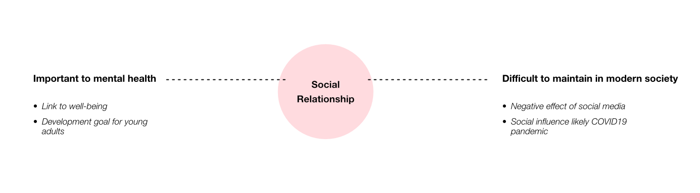
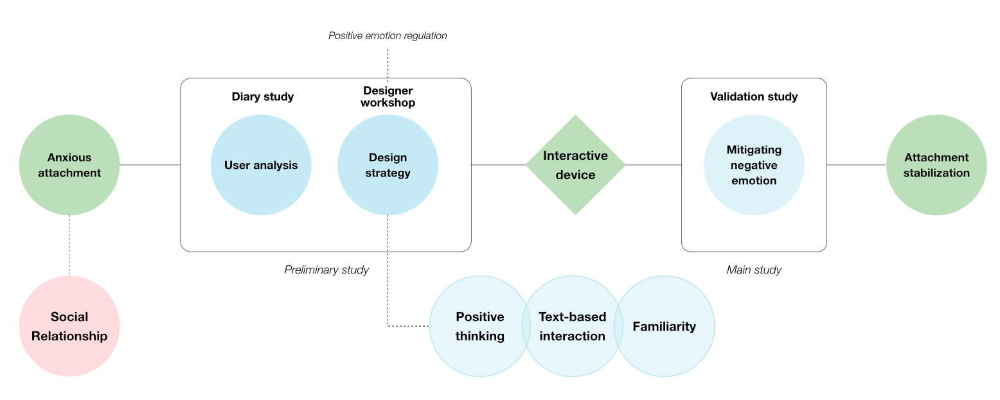
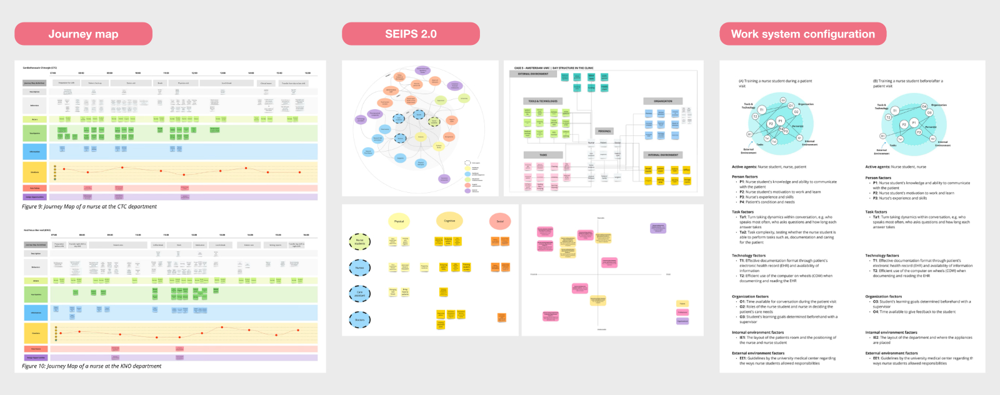
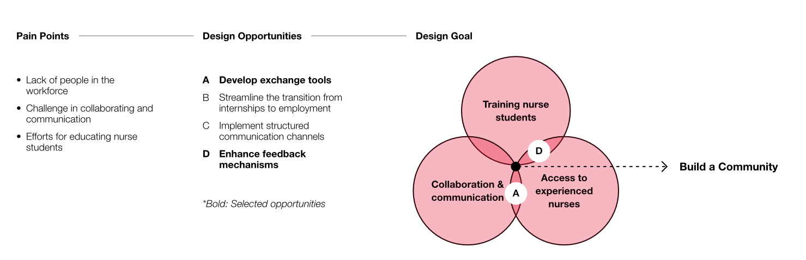
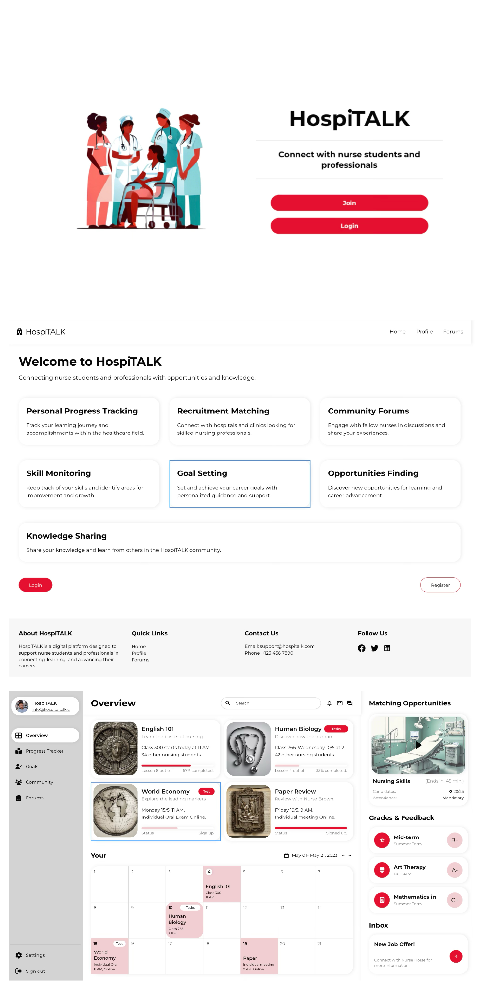

Mitigating Negative Emotions in Anxious Attachment
This project aims to redesign the daily schedule for medical staff at Amsterdam UMC by considering their needs and constraints. Insights were analyzed and translated into design opportunities. As a result, a digital platform, HospiTALK, was designed to foster collaboration and support education among nurses and nurse students.
How might we mitigate negative emotions in anxious attachment?
This research project aimed to improve user well-being by developing an interactive product for individuals with anxious attachment because anxious attachment can negatively impact well-being. Given the prevalence of social media and its influence on emotions, this project sought to address the emotional needs of those with anxious attachment through the use of an interactive device.

Research process.


Below are key visuals from the analysis phase: (1) Journey map: Identified needs and pain points across the nursing workflow, (2) SEIPS 2.0 model (Holden et al., 2013): Analyzed complex interactions and interdependencies among people, tasks, tools, and environment. (3) Work system configuration: Explored the current and desired workflow conditions to support future improvements.
Translating pain points into a design goal.
Through the insights, key pain points were identified. In response, several design opportunities were generated to improve the nursing department’s workflow, communication, and learning environment. Among these opportunities, two were selected to form the design proposal. The resulting design goal focuses on building a supportive community that strengthens nursing education, improves collaboration, and enhances access to senior expertise.

Design proposal of HospiTALK.
As a design outcome, the digital platform HospiTALK was developed to support growth, connectivity, and professional development within hospital environments. Through this platform, nurses and nurse students can learn from one another, exchange knowledge, and build shared expertise. The platform strengthens workforce resilience by creating a sustainable resource pool, supporting continuous professional development, and reducing workload through improved collaboration. The expected impact includes enhanced service quality and greater staff satisfaction.
